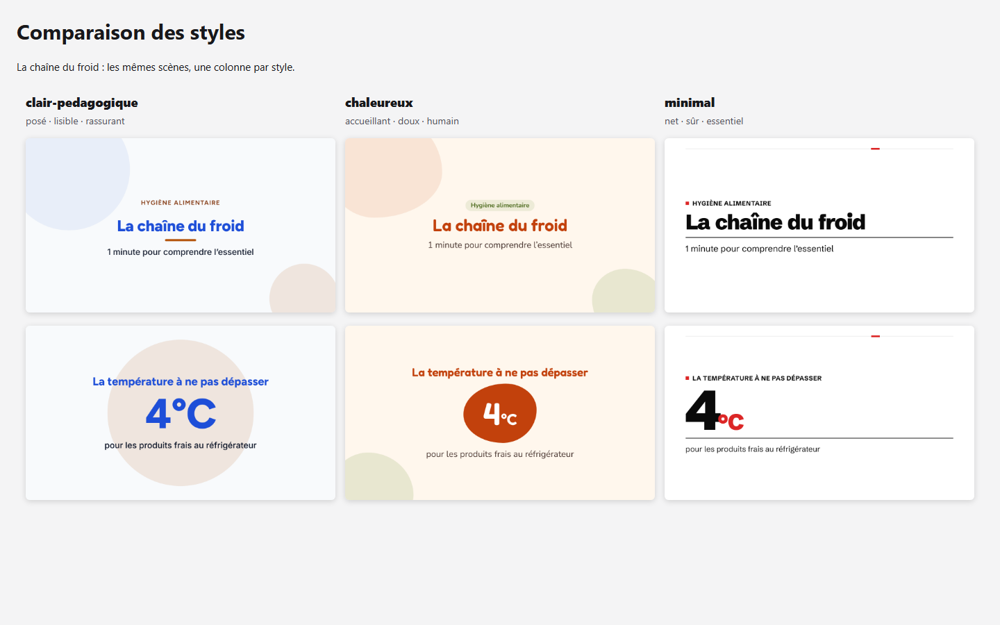
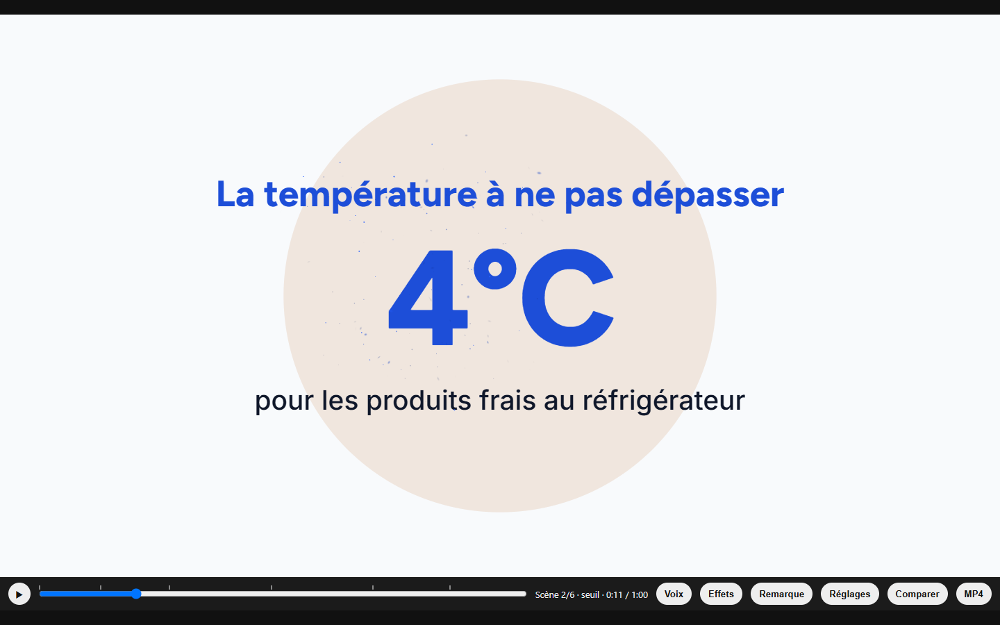

Tutorial 1 · About 30 minutes
First video
Claire is a food hygiene trainer. She wants a short video to open her next session: “The cold chain”, in one minute. You are going to create it with her, watch it in your browser, edit it with a single sentence, then export it as an MP4.
This tutorial follows the quick path: you only approve the timeline and the style, and Pulse Motion does everything else. To keep things simple, the video will have composed music but no voice. You will add your voice, your logo and your colours in tutorial 2 (in French).
The answers shown here are examples: give your own, or pick another topic.
Pulse Motion talks to you in French in the conversations below (that is what you will see); an English translation follows each one.
0 Before you start 5 minutes
Goal: an empty folder, open in VS Code, with the Claude Code panel ready and Pulse Motion installed.
- Check that everything is installed with the Requirements page: Claude Code, Node.js 20 or later, Chrome or Edge, and the
pulse-motionplugin. - Create an empty folder called
chaine-du-froid, wherever you keep your documents. One video = one folder: each new video gets its own. - In VS Code, open the File menu → Open Folder… and choose
chaine-du-froid. If VS Code asks whether you trust the authors, answer Yes, I trust the authors: it is your folder. - Open the Claude Code panel: click ✻ Claude Code, bottom right, or the spark-shaped icon in the left-hand bar.
The /pulse-motion:… commands do not appear
The plugin is not installed, or VS Code was not restarted after the installation. Follow the Install Pulse Motion step, then close and reopen VS Code.
1 Describe the video 3 minutes
Goal: give the topic and answer the first round of questions.
/pulse-motion:creer la chaîne du froid pour mes stagiaires“the cold chain, for my trainees”
Pulse Motion first checks that everything is ready (Node.js, empty folder), then asks four questions. Each question has one answer marked (Recommandé) (Recommended) at the top: if in doubt, pick it.
/pulse-motion:creer la chaîne du froid pour mes stagiaires
pulse-motion etat .
Durée ? → 30 s / 1 min (Recommandé pour une formation courte) / 3 min / 5 min Public ? → Grand public / Professionnels de la restauration / Stagiaires en formation Parcours ? → Rapide (Recommandé) : je valide seulement le déroulé / Accompagné : je valide aussi le style et la vidéo finale À ajouter ? → Mon logo et mes couleurs / Rien pour l'instant
1 min · Stagiaires en formation · Rapide · Rien pour l'instant
In English
You: /pulse-motion:creer the cold chain, for my trainees
Claude: Length? → 30 s / 1 min (Recommended for a short training session) / 3 min / 5 min. Audience? → General public / Catering professionals / Trainees. Path? → Quick (Recommended): I only approve the timeline / Guided: I also approve the style and the final video. Anything to add? → My logo and my colours / Nothing for now
You: 1 min · Trainees · Quick · Nothing for now
2 Choose the sound 2 minutes
Goal: music composed for the video, with no voice for this first try.
Musique ? → Une musique composée pour la vidéo (Recommandé), lumineuse, posée, qui avance / J'ai un fichier / Pas de musique Voix ? → Je l'enregistre (Recommandé) / J'ai un fichier / Pas de voix Sous-titres ? → Oui (Recommandé) / Non
Une musique composée · Pas de voix · Non
Sans voix, il n'y aura pas de sous-titres : ils reprennent le texte dit.
In English
Claude: Music? → Music composed for the video (Recommended), bright, calm, moving forward / I have a file / No music. Voice? → I’ll record it (Recommended) / I have a file / No voice. Subtitles? → Yes (Recommended) / No
You: Composed music · No voice · No
Claude: Without a voice, there will be no subtitles: they repeat the spoken text.
The music is composed on your computer, for this video: it starts gently on the first scene, builds before the last one, and ends on a chord. Pulse Motion describes its mood in three words; you can change it later with a single sentence (« plus calme » (“calmer”), « une autre variante » (“another variation”)). Everything is explained on the Sound page (in French).
3 Read the timeline and choose the style 5 minutes
Goal: approve the list of scenes, and choose the look of the video from three styles.
Pulse Motion writes the timeline: the list of scenes in order, like the running order of a TV show. One idea per scene, with enough time to read each text. It shows it to you as a table:
| No. | Scene | On-screen text | Length |
|---|---|---|---|
| 1 | Title | Food hygiene · The cold chain · 1 minute to grasp the essentials | 8 s |
| 2 | Figure | The temperature not to exceed: 4 °C, for fresh products in the fridge | 9 s |
| 3 | List | The 4 links in the chain: lorry, cold room, display counter, fridge | 13 s |
| 4 | Comparison | Good habits: do, avoid | 13 s |
| 5 | Alert | Never refreeze | 10 s |
| 6 | Conclusion | Cold means safety | 9.5 s |
Total length: about 1 minute. This is the timeline of the example shipped with the plugin (its on-screen texts are in French; they are translated here).
Meanwhile, a page opens in your browser: the style comparison. Your first two scenes are drawn there in the three styles recommended for a training video. Have a look, then come back to VS Code.

Voici le déroulé : 6 scènes, environ 1 minute. → Je valide, avec le style posé, lisible et rassurant (Recommandé) / Je valide, avec le style accueillant, doux et humain / Je valide, avec le style net, sûr et essentiel / Je veux changer quelque chose
Je valide, avec le style posé, lisible et rassurant
In English
Claude: Here is the timeline: 6 scenes, about 1 minute. → I approve, with the calm, readable and reassuring style (Recommended) / I approve, with the welcoming, soft and human style / I approve, with the clean, confident and essential style / I want to change something
You: I approve, with the calm, readable and reassuring style
4 Let it build 5 minutes
Goal: wait while the scenes are written and checked. You have nothing to do.
Pulse Motion hands each scene to an animator, a specialised assistant, and all six work at the same time. Each one starts from a ready-made scene of the style (title, figure, list…) and adapts it to your texts. Pulse Motion also decides on the effects: here, for example, sparkles on the 4 °C figure.
Then come the checks. They make sure each text has time to be read, nothing overflows, nothing stays still for too long, and French typography rules are followed. Safe cases are fixed automatically, and Pulse Motion tells you so:
pulse-motion assembler .
pulse-motion controler .
J'ai allongé la scène 3 d'une seconde pour laisser le temps de lire, et remplacé les guillemets droits par des guillemets français dans la scène 4.
In English
Claude: I made scene 3 one second longer to leave time for reading, and replaced the straight quotes with French quotation marks in scene 4.
Pulse Motion says the render could not be checked
Neither Chrome nor Edge was found. The video is built, but the on-screen checks (overflow, contrast) could not be run. See Chrome or Edge.
5 Watch the video 5 minutes
Goal: play the video in the preview and learn to find your way around it.
The preview opens by itself in your browser. It is the video itself, with a playback bar at the bottom. Click ▶ (or press the space bar): the music starts with the picture.

| To… | Do this |
|---|---|
| Play or pause | ▶ or the Space bar |
| Go to a precise moment | Drag the slider; the small markers show where each scene starts |
| Step forward or back one frame | → or ← |
| Jump to the next or previous scene | Shift + → or Shift + ← |
| Replay a scene in a loop | B (B again to stop) |
The label on the bar shows the current scene: « Scène 3/6 · maillons » (Scene 3/6 · links). Note the number of any scene you want to edit.
I can’t hear the music
Browsers wait for you to do something before they play any sound: click ▶. Also check the volume of your computer and of the tab.
I closed the preview tab
Just ask « rouvre l'aperçu » (“reopen the preview”) in Claude Code, or run /pulse-motion:reprendre.
6 A first edit 3 minutes
Goal: change something with a single sentence, then go back.
Let’s say the list of the four links scrolls by too fast for your trainees:
/pulse-motion:retoucher ralentis la scène 3“slow down scene 3”
/pulse-motion:retoucher ralentis la scène 3
pulse-motion historique sauvegarder .
✅ Fait : la scène 3, « Les 4 maillons de la chaîne », se déroule plus lentement. L'aperçu s'est rechargé.
In English
You: /pulse-motion:retoucher slow down scene 3
Claude: ✅ Done: scene 3, “The 4 links in the chain”, now plays more slowly. The preview has reloaded.
Look at the preview: it has reloaded by itself, at the same position. If you don’t like the result:
/pulse-motion:retoucher annule“undo”
7 Export as MP4 5 minutes
Goal: get the MP4 file to share with your trainees.
/pulse-motion:exporterPulse Motion checks the video one last time, then looks for ffmpeg. If it is not installed, it offers to install it: it is a small piece of free software that builds the video in high quality, with clean sound. Accept (recommended), or choose to export in the browser, without installing anything.
/pulse-motion:exporter
→ Installer ffmpeg (Recommandé) / Exporter sans, dans le navigateur
Installer ffmpeg
pulse-motion exporter .
✅ Fait : la vidéo « La chaîne du froid » est exportée en MP4 (1 min 03, avec le son, export fidèle).
In English
You: /pulse-motion:exporter
Claude: → Install ffmpeg (Recommended) / Export without it, in the browser
You: Install ffmpeg
Claude: ✅ Done: the video “The cold chain” has been exported as an MP4 (1 min 03 s, with sound, high-fidelity export).
The high-fidelity export takes about two seconds of processing per second of video: one minute of video, two minutes of waiting.
The ffmpeg installation failed
Pulse Motion then exports in the browser, without installing anything. The MP4 is there; you can install ffmpeg later by following the requirements.
✓ What next?
You have been through the whole journey: describe, approve, watch, edit, export. You now have two files:
- the MP4, to send, publish, or upload to your training platform;
- the animated page, which opens in any browser, even offline, and updates with every edit.
To pick this video up again another day, reopen the chaine-du-froid folder in VS Code. Pulse Motion reminds you of the video in progress; type /pulse-motion:reprendre.